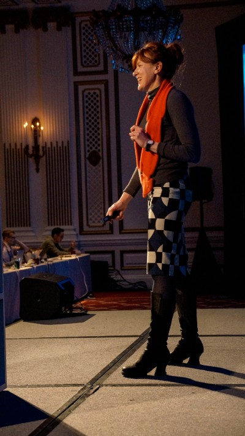

How She Got There
An interview with Mule Design’s Erika Hall about philosophy, phone calls and her professional journey.
In the fall of 2013 I interviewed Erika Hall, co-founder of Mule Design Studio, one of the most influential design practices in North America. It was the first of fourteen interviews that I would conduct for my book How They Got There: Interviews With Digital Designers About Their Careers, and so in many ways it was the most important, too.
 Erika had been profiled numerous times in many different forums, and her insights on design, business and technology were well known. I was after something narrower, though. I wanted to hear about the nitty gritty of her professional journey, the trials and tribulations she encountered in finding meaningful work, and the stories of her lucky breaks and less lucky mishaps. The goal of How They Got There was to document the random things that conspire together to forge every career, even very high profile ones like Erika’s.
...
A new stuff starts here
I knew that, if it went off well, our discussion would serve as a kind of template for the others that would follow, and so I was relieved when Erika talked about her professional life with such unaffected candor and incisive wit. Her tales of the first dot-com bubble and burst, and how she salvaged from that wreckage the building blocks that would lead to Mule Design, were exactly what I was looking for. This interview remains one of my very favorites from all of the ones I conducted for How They Got There.